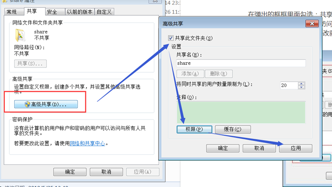
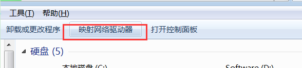
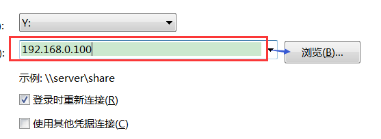
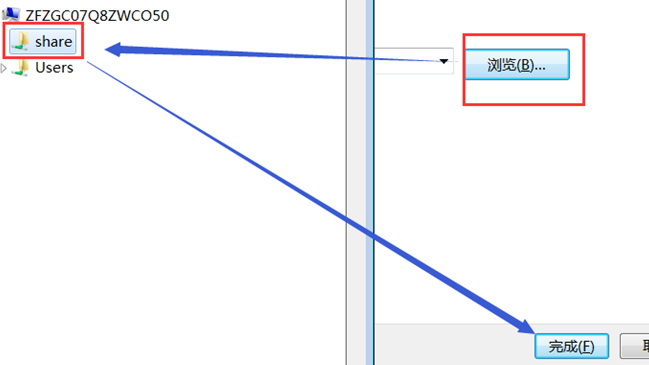
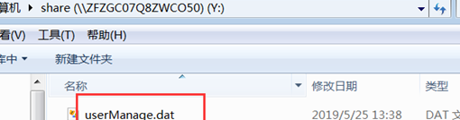
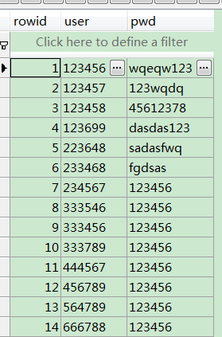
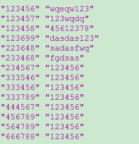

1.首先设置共享,映射(用来实现远程访问)
将要共享的share文件夹设置为共享(远程访问默认只能读),如果要想远程访问能够写的话,则点击权限进行修改,然后应用.

2.然后在远程电脑上,将共享的文件夹映射到磁盘上
首先点击如下按钮:

然后输入要共享文件夹的电脑IP,然后点击浏览:

然后选择share文件夹,然后点击确定,并完成:

如下图所示,就可以在远程电脑上,看到share共享文件夹里的SQLite数据库了:

3.写代码,来读取目标userManage.dat数据库中的内容
userManage.dat中的内容如下所示:

代码如下所示:
QSqlDatabase db = QSqlDatabase::addDatabase("QSQLITE"); db.setDatabaseName("\\\\192.168.0.100\\share\\userManage.dat");//连接的数据库 if (!db.open()) { QMessageBox::warning(0, QObject::tr("Database Error"), db.lastError().text()); return ; } QSqlQuery query; query.exec("SELECT * FROM userManage"); while(query.next())//遍历数据表格mqtt.account每一行，从第0行到最后一行 { QString user = query.value(0).toString().trimmed();//trimmed函数表示去除QString两边的空格 QString password = query.value(1).toString().trimmed(); qDebug()<<user<<password; }
运行打印:

注意: 由于sqlite是一个文件级的轻量级数据库,如果多个程序同时访问的话,很容易出现死锁的,建议使用sqlserver , mysql